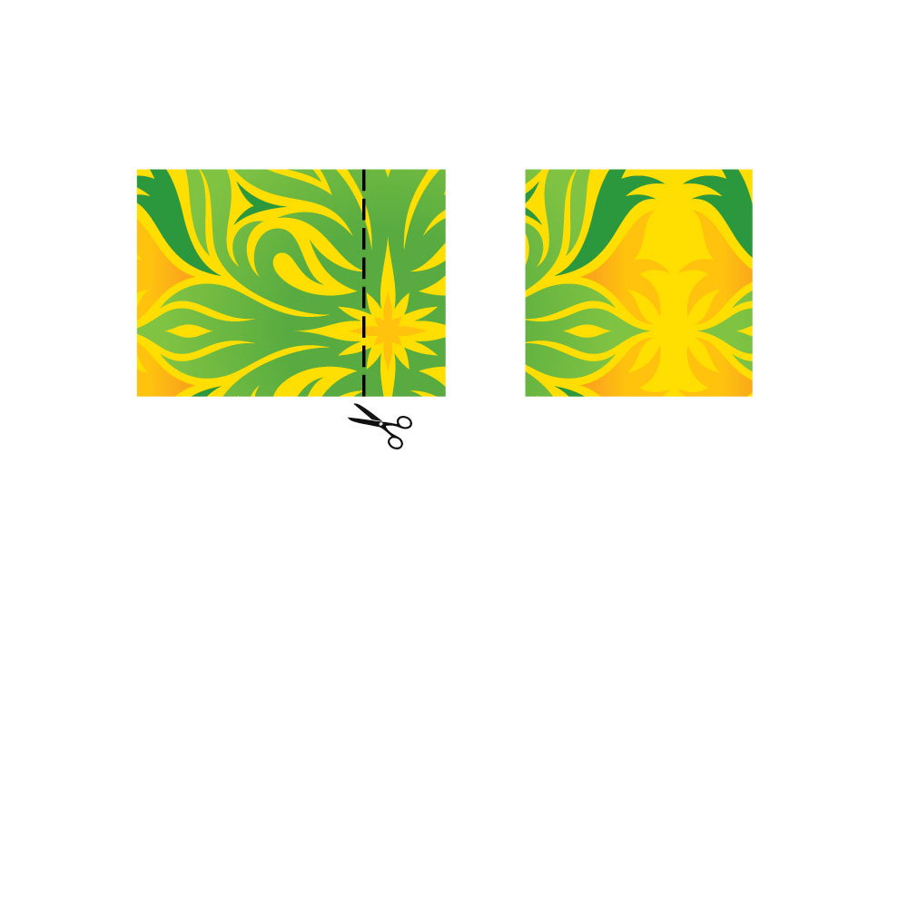

To create this envelope, we will need to have square paper. Choose how big you want your envelope to be and then with your ruler, measure the length and width to be the same. User scissors to cut off the excess paper.
If you don't want to bother with the ruler, you can do one of two things. One, you can buy square paper. Two, if you use 8.5 x 11" paper, you can cut off the excess paper after your initial diagonal crease in the next step.
 Back to main page